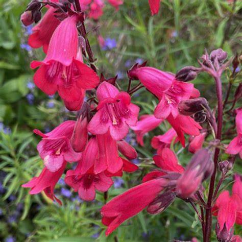

Plantas endemicas
Plantas
Campanita Rosa

Campanita rosa
Una planta herbácea perenne que se encuentra en zonas serranas de clima templado subhúmedo y semifrío, entre los 2000 y los 3900 metros sobre el nivel del mar. Su inflorescencia es una panícula terminal con flores tubulares de color rojo o carmesí.
Ir al menu